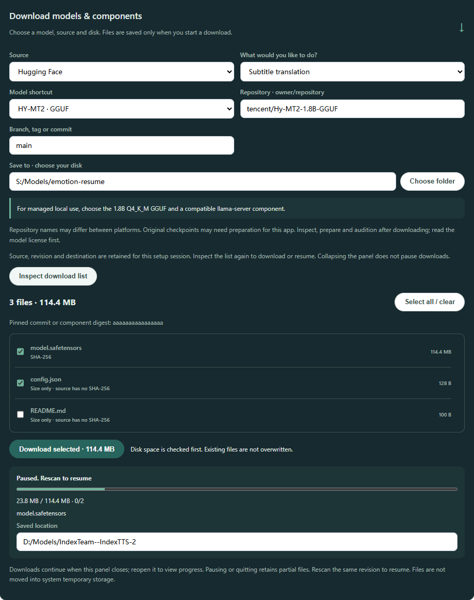
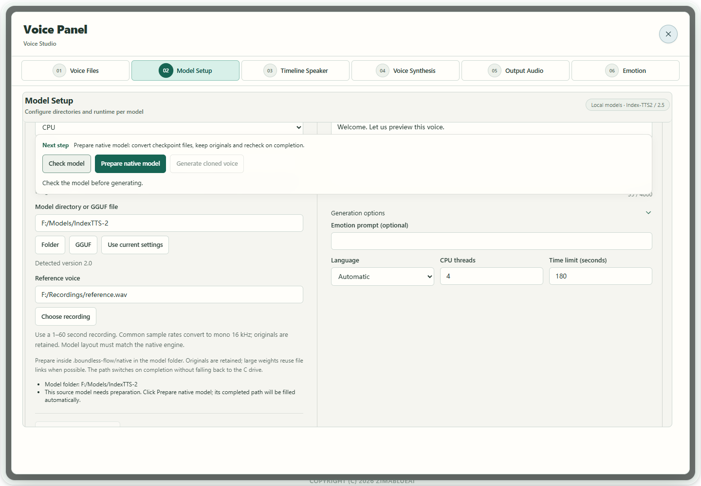

Scenario guide
Download models and configure the app
Choose files for the task and distinguish source checkpoints, native packages and APIs.
What you will get
Know what to obtain, where to store it, where to select it and which routes are not yet available.
Before you start
- Choose a writable model folder with enough free space on your preferred disk. Keep models separate from the app. Disk and GPU memory requirements vary by model and quantization; there is no universal minimum.
- Read the linked model card and license before downloading. Downloads need network access. These guides and configured local models can work offline, while APIs require a reachable service.
- Do not download every model at once. Complete and test one task first. File inspection does not establish inference, quality or realtime performance.
- For dependencies, select Runtime component · official package and enter the official HTTPS file URL, filename, published size in bytes and SHA-256. Packages are downloaded and verified, not installed or executed automatically. Match the package to your OS, GPU and model backend.
Step by step
- 01
Choose an operating mode for your task
For text, start with recognition. Add a translation model/API for translation, a separate LLM for minutes, and TTS for cloning/design. Voice Tools uses Local models for local packages, Model service for running servers, and Cloud API for accounts. The routes do not convert into one another automatically. The native FireRed Instruct route reads its complete original folder without a separate server.

Actual app UI · Select to enlarge; example data is not your result - 1Open models and parameters.
- 2Open voice-model setup and audition.
- 02
Choose a source, disk and complete files in the app
Open Setup Wizard → Models & Params and expand Need model files? Download models & components. Choose a public Hugging Face or ModelScope repository under Source, use a shortcut or enter owner/repository and a branch, tag or commit. Names can differ across platforms; read the matching model card and license first. Use Choose folder to select your disk, then Inspect download list. Select all required shards, configuration, tokenizers, codecs and auxiliary models, check the size and click Download selected. Do not save a web page as weights or download only the backbone. Account authorization for gated repositories is not connected.

Download setup example · Test file list; actual files and sizes follow your selected platform. Select to enlarge. - 03
Monitor progress and pause or resume when needed
Monitor bytes, file counts and the current file. Collapsing the section or changing setup steps does not pause background downloads; the same wizard retains the source, repository, revision, folder and selections. To stop, click Pause download and wait for pausing to finish. Resume with the same source, revision and folder: Inspect download list again, then download selected files. A source without digests may require downloading again; resuming at the interruption point is not guaranteed. Closing the whole wizard ends its draft. After restarting the app, enter the settings and inspect again.
Download setup example · Test file list; actual files and sizes follow your selected platform. Select to enlarge. - 04
After downloading, locate the correct folder or model file
When downloading completes, use Copy model path and note the saved location. Folder-based models need the root containing configuration and all required assets. An input requiring one ONNX or GGUF file needs the actual file inside that folder, not the folder itself. Voiceprints use a speaker-embedding ONNX; emotion analysis uses a nine-label classifier ONNX. The extension alone does not make them interchangeable. Downloads do not change the active model; select and inspect it in the relevant feature next.
Download setup example · Test file list; actual files and sizes follow your selected platform. Select to enlarge. - 05
Select the path in the app and inspect
Configure recognition under Setup Wizard → Models and parameters; voices under Voice Tools → Model Setup; and speaker embeddings under Voiceprints → Choose model. Follow the form's distinction between a folder and an individual GGUF/ONNX file. Inspect again after changing paths. Cloning also needs a reference recording. After replacing it, select Check model again; an old reference check cannot validate new audio.

Actual app UI · Select to enlarge; example data is not your result - 1Check and generate stay above the editing area.
- 2A file check does not prove voice quality.
- 06
Prepare when required, then preload
Use Check model above the editor and follow the next-step message. If conversion is required, select Prepare native model in the same action area. Index adds its package at the fixed .boundless-flow/native location; VoxCPM2 adds audiovae.safetensors in the original folder. Originals remain, and conversions/links need space on that volume. Inspect again after preparation. Load model ahead of time, below the model fields, is optional memory loading: it does not finish downloads, convert files or warm up inference. The original FireRed folder needs no such conversion. Interpretation separately prepares the model, reference and output before recording; see the interpretation guide. Model files and app runtime components are separate. If a native component is missing, use the complete app folder with its matching components. Prepare native model does not install CUDA or supply runtime components. Complete missing model files on your chosen model disk, then inspect again; do not rename files to bypass the warning. With supporting FireRed components and a selected, checked reference, the loading button becomes Prepare model and reference. It prepares the model, reference and decoder prefix without generating speech. Without a reference, or with older components, only model loading is available. Generate and listen to a short sentence after either route. Recheck and prepare after changing the reference or transcript. The older screenshot illustrates its original controls; it does not show this conditional new button.

Actual app UI · Select to enlarge; example data is not your result - 1Next step follows this model check.
- 2Convert original checkpoints while keeping originals.
- 07
Verify with your own short sample
Transcribe a short passage, translate a sentence, synthesize a short target-language passage, and compare an independent speaker recording. Inspect completion and listen or review before saving. Complete files and a passing check do not enable an unavailable model adapter.

Actual app UI · Select to enlarge; example data is not your result - 1Select a configured translation service.
- 2Enter a short passage to test.
- 3Choose the target language.
- 4Run the test after entering valid settings.


Model-by-model downloads and setup
These cards separate upstream sources from app adapter status. Choose one model for your task. External sources were checked on 2026-10-09; downloads and account actions need network access.
WhisperLocal audio transcription
Required files
Use a GGUF/GGML file compatible with the current native runtime. Original Python safetensors cannot substitute. Obtain the matching converted model; use a multilingual model for Chinese rather than an English-only .en variant.
Where to configure
Setup Wizard → Models and parameters → Whisper → Choose the matching model file, or use the Whisper route under Audio transcription. Test a short recording afterward.
Current adapter status
Selected Chinese transcription has actual evidence. File transcription does not establish every live-caption or mobile workflow.
Open model source ↗SenseVoice · NativeNative audio transcription
Required files
The official original model is the source. The app's native route requires a compatible GGUF/GGML model and runtime component; renaming an original .pt checkpoint does not convert it.
Where to configure
Setup Wizard → Models and parameters → SenseVoice · Native → Choose the adapted model file. Without a compatible native package, use a matching ONNX route or configured service.
Current adapter status
Selected native Chinese transcription is verified; arbitrary upstream versions are not assumed to load directly.
Open model source ↗FunASRExisting compatible live recognition route
Required files
The compatibility route uses matching .pt, config.yaml, vocabulary and runtime components. FunASR is a toolkit family, not proof that any model with the name works. Newer ASR models need separate adapters.
Where to configure
Setup Wizard → Models and parameters → FunASR → Complete model folder matching the existing compatibility runtime → Short recording test.
Current adapter status
The existing route is retained and may use legacy Python compatibility components. The entire app must not be described as Python-free.
Open model source ↗SenseVoiceSmall ONNXLocal transcription
Required files
The current folder inspector requires model.onnx with a matching tokens.json or tokens.txt vocabulary. Upstream packages may use model.int8.onnx/tokens.txt; renaming unrelated files does not establish compatibility. Obtain an app-compatible export.
Where to configure
Setup Wizard → Models and parameters → SenseVoice/ONNX recognition folder; inspect and test a short recording.
Current adapter status
Chinese transcription has actual evidence. Export versions must match; comprehensive multilingual quality is not accepted.
Open model source ↗Index-TTS2 / IndexTTS-2Reference cloning and supported emotion prompting
Required files
The original root includes config.yaml, gpt.pth, s2mel.pth, bpe.model, feat1.pt, feat2.pt and wav2vec2bert_stats.pt, plus matching w2v-bert, semantic codec, CAM++ and BigVGAN assets. The main repository alone may be incomplete; follow inspection results.
Where to configure
Voice Tools → Model Setup → Local models → Index-TTS2/2.5 → Choose directory → Check model → Prepare native model → Wait for path switch → Short audition.
Current adapter status
Experimental native route; available languages follow the detected version. Actual audition remains required.
Open model source ↗IndexTTS-2.5Multilingual reference cloning and expression control
Required files
Keep the original 2.5 config.yaml, gpt.pth, s2mel.pth, codec.pth, matching tiktoken vocabulary and auxiliary assets. Do not substitute 2.0 codec weights or merely change version. Check specific missing dependencies after obtaining auxiliaries.
Where to configure
Use the shared Index2 route and prepare its original folder. The added package stays at .boundless-flow/native in that model directory and retains links to source assets.
Current adapter status
Actual CUDA Chinese generation exists for the tested F-drive package; not every folder, GPU, language or emotion is accepted.
Open model source ↗VoxCPM2Local reference cloning
Required files
Keep the complete config.json, backbone safetensors or shards/index, tokenizer files and audiovae.pth. If audiovae.safetensors is missing, use app preparation to add it while retaining originals and the model path.
Where to configure
Voice Tools → Model Setup → Local models → VoxCPM2 → Choose folder/reference → Check model → Prepare files if prompted → Optional memory loading → Generate a short audition; check again after replacing the reference.
Current adapter status
Actual CUDA Chinese cloning and session reuse exist. This app route does not offer independent emotion parameters or description-based design.
Open model source ↗Qwen3-TTS BaseReference cloning with Base weights
Required files
Keep the complete Base config.json, backbone weights, tokenizer configuration/vocabulary and speech_tokenizer/config.json plus model.safetensors. The 0.6B Base is a separate size and still needs a complete matching package.
Where to configure
Local models → Qwen3-TTS → Reference clone · Base; choose a complete folder, enter the reference transcript, inspect and audition.
Current adapter status
Selected Base CPU/CUDA generation has actual evidence; independent voice quality remains unaccepted. Base is not reference-free design.
Open model source ↗Qwen3-TTS VoiceDesignDescription-based design without a reference
Required files
Use a complete VoiceDesign package with config.json, backbone safetensors, tokenizer configuration and matching speech_tokenizer. Do not mix it with Base or CustomVoice.
Where to configure
Local models → Qwen3-TTS → Describe a voice · VoiceDesign; enter a description and synthesis text, inspect and generate.
Current adapter status
Actual generation and reuse evidence exist; expression and independent quality still require listening evaluation.
Open model source ↗Qwen3-TTS CustomVoiceModel presets, distinct from cloning
Required files
Keep the complete CustomVoice package and matching tokenizer/speech_tokenizer files in their original structure.
Where to configure
Use preset speakers through the existing speech synthesis settings. CustomVoice cannot substitute for Base cloning or VoiceDesign in the native workbench.
Current adapter status
A preset model; not every backend combination is verified.
Open model source ↗CosyVoice3Service cloning, cross-language and instruction delivery
Required files
The official complete checkpoint is loaded by a compatible server. Local execution separately requires a complete audio.cpp GGUF package and resources, not this original folder. No qualified downloadable native GGUF package is provided here.
Where to configure
Model service → CosyVoice3 → Enter a running server root → Select mode and reference/transcript or instruction → Short audition. The app does not start the server.
Current adapter status
The service protocol and UI are integrated. Audition your deployed service to verify output; actual native generation remains unverified.
Open model source ↗Fish Speech S2 ProService cloning and expression tags
Required files
Use complete S2 Pro weights and decoder assets in the matching service; old Fish weights do not substitute. The local route needs a complete audio.cpp GGUF package whose download and actual generation are not qualified here.
Where to configure
Model service → Fish Speech S2 Pro → Actual endpoint, reference and transcript → Optional synthesis-text expression tags → Short audition.
Current adapter status
Optional service adapter. The weight license is not a general commercial open-source license; read the official terms before use.
Open model source ↗FireRedTTS3 Instruct / BaseInstruct reference cloning and experimental streamed interpreting; Base unavailable
Required files
Keep complete fireredtts3_instruct, redae and text_tokenizer subfolders. The backbone and RedAE each require their final model.safetensors; download staging does not substitute.
Where to configure
Local models → FireRedTTS3 Instruct → Original root → CPU → Short reference and accurate transcript → Inspect and audition offline. Then use that model/reference in interpretation, enabling Play while generating · Experimental. The current workbench plays speech automatically, with no separate switch.
Current adapter status
The current Windows package uses CPU and does not provide CUDA components for this engine; the app retains experimental generation-time PCM playback. For NVIDIA GPU, first check and select supported Index-TTS2, Qwen3-TTS or VoxCPM2 components. Generation starts for each finalized full translation. Sustained realtime, physical devices and full voice quality remain unaccepted. Base, voice design and independent emotion controls are unavailable.
Open model source ↗MOSS-TTS familyPackage inspection; app synthesis remains unavailable
Required files
Keep each model's config.json, weight shards/index and tokenizer, plus the matching complete MOSS-Audio-Tokenizer or v2 codec. Do not mix codec versions.
Where to configure
Voice Tools → Model Setup → Models being integrated → MOSS-TTS → Model and codec folders → Inspect package.
Current adapter status
Upstream capability does not mean app availability. This inspector cannot complete cloning, design or interpretation.
Open model source ↗VibeVoice Realtime 0.5BModel-service preset audition
Required files
A running official service loads its complete model. The app selects presets rather than importing a cloning reference.
Where to configure
Model service → VibeVoice Realtime 0.5B → Actual WebSocket endpoint and exact available preset → Audition → Apply to continuous interpretation after success.
Current adapter status
Complete-text input, streamed PCM and presets; no cloning, design or independent emotion parameters. Actual Chinese quality remains unverified.
Open model source ↗HY-MT2 / Hy-MT2Text and subtitle translation
Required files
For managed local use, choose the matching official Tencent 1.8B Q4_K_M GGUF and a compatible complete llama-server component. Other quantizations/sizes can use deployed compatible APIs; they are not automatically qualified for this managed route.
Where to configure
Setup Wizard → API settings → HY-MT2 → Select local model/server with CPU or matching CUDA backend → Start and test text; alternatively configure a real compatible API.
Current adapter status
Actual CPU translation and managed-lifecycle evidence exist. Target-language quality and specific GPU packages still require verification.
Open model source ↗Server component source ↗Index-TranslateTranslation API or imported managed GGUF
Required files
API use needs no local model download. Self-hosted servers require the complete chosen official model. Managed local use explicitly imports a compatible GGUF; automatic conversion of source weights is not assumed.
Where to configure
API settings → HY-MT2/Index translation configuration → Actual endpoint and model ID → Text test. Public endpoint/access follow current official instructions; permanent free access or availability is not guaranteed.
Current adapter status
Translation and import adapters are retained. Model quality, speed and account access need separate verification.
Open model source ↗CAM++ / ERes2Net / WeSpeaker ONNXSpeaker embeddings, distinct from transcription
Required files
Obtain a compatible speaker-embedding .onnx file and check its family and license. Arbitrary original .pt/.bin checkpoints cannot be selected directly.
Where to configure
Voiceprints → Choose model → Actual ONNX → Add valid WAVs → Create voiceprint → Compare independent audio.
Current adapter status
Enrollment and candidate comparison are integrated. Uncalibrated scores do not confirm identity; cross-device/unknown-speaker quality remains unaccepted.
Open model source ↗Cloud APIs / Minutes LLMCloud recognition, translation, speech, voice creation or minutes
Required files
No local weights are needed. Prepare a real endpoint, model/voice ID and an API key with required permissions. Inspect LingLu and ordinary minutes settings separately.
Where to configure
Choose the capability/provider under Setup Wizard → API settings; voice creation is under Voice Tools → Cloud API. Test a short request before applying it.
Current adapter status
Capabilities depend on the account and adapter protocol. Saving settings does not prove API access or every capability.
emotion2vec+ base / seed · 九类分类 ONNXIndependent acoustic emotion candidates, distinct from synthesis controls
Required files
The app needs a compatible ONNX export retaining the nine-label classifier. Use the official source to check the model and licence; downloading its source repository does not supply an app-compatible ONNX automatically. Feature-only exports are unsuitable.
Where to configure
Setup → Models and parameters → Local model library → Emotion recognition. Check preparation can inspect an original model.pt. Register a compatible nine-label classifier.onnx and save Setup, then choose it and a short recording in Voice Tools → 06 Emotion. File checks do not verify inference.
Current adapter status
Independent analysis is integrated. Candidate scores are uncalibrated and do not represent intensity or psychological conclusions. Analysis does not automatically change meeting labels or synthesis controls.
Open model source ↗Source checked for this model: 2026-10-10
How to verify success
Your selected task processes a short sample, with matching source, files and configuration. Unavailable capabilities remain explicit; completing a download is not successful inference.
If something goes wrong
Missing files / downloader staging only
Complete the matching package and dependencies from its source. Do not rename files to hide missing assets or treat download staging as final weights.
Incompatible GGUF
Speech requires a complete package with the matching audio.cpp family and embedded specification. Translation GGUFs, older Fish GGUFs and lone backbone files are not interchangeable.
Wrong API endpoint or model
Use the deployed endpoint, model ID and credentials. A default local address works only when its service is running. Test text before saving.
Repository needs login / a component does not install automatically
This entry currently uses public HF/MS repositories; gated-repository authorization is not connected. Runtime packages are only downloaded and verified from official direct links; enter size and SHA-256 from official release information yourself. Follow the component’s official installation/configuration instructions and then inspect in the app. A downloaded package is not an installed dependency.
Download completed, but the model cannot be selected
Check whether the input needs a folder or one file, the model family and all required assets. Staging files or source checkpoints alone may need completion or an adapted package. Changing the extension does not convert the format.